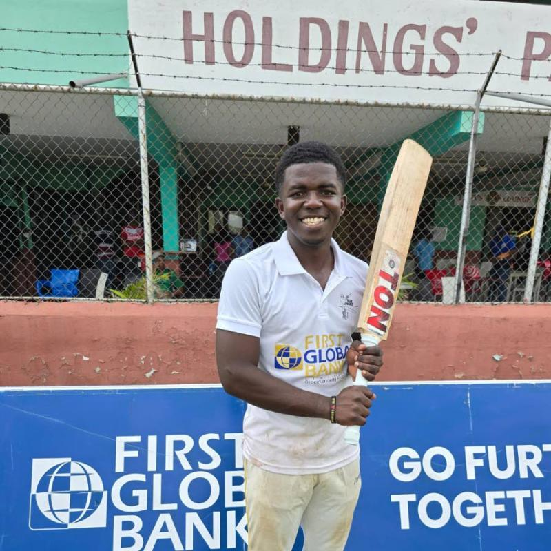
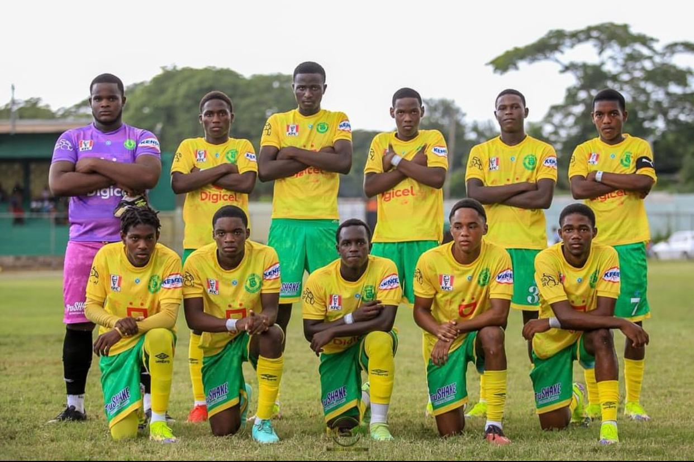
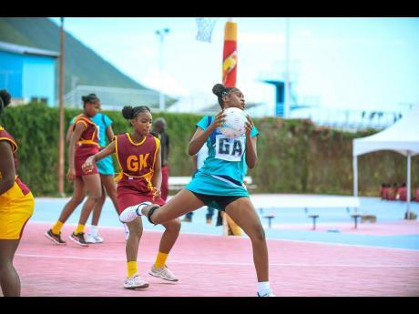
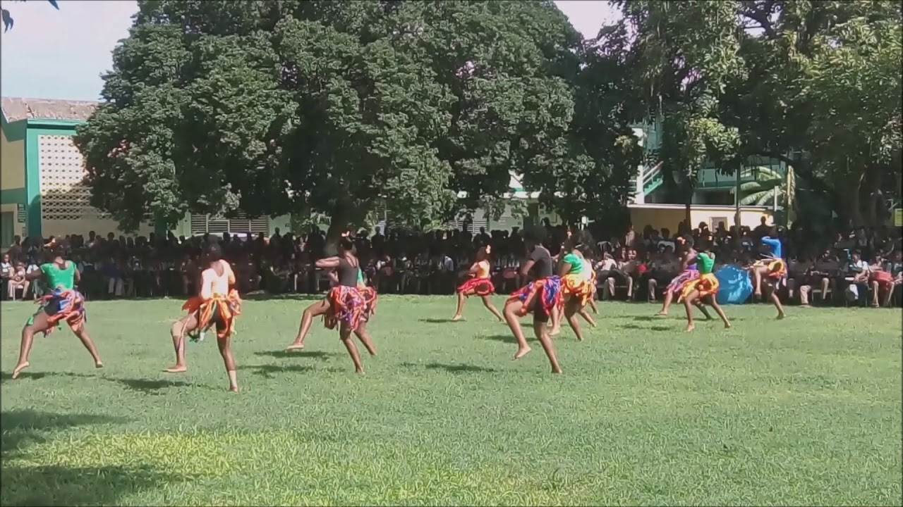
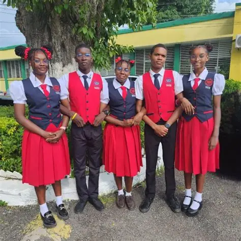

About St. Jago High School
St. Jago High School is one of Jamaica's established secondary institutions. Located on Monk Street in Spanish Town, St. Catherine, the school has a long history of academic achievement, sporting excellence and cultural development.
The institution continues to develop students through education, discipline, leadership and participation in extracurricular activities.
Our History
The school's history dates back to 1744, when Peter Beckford established an educational institution in Spanish Town. The school later developed through mergers with other educational institutions.
In 1846, Smith's Charity School became part of the institution. In 1955, the merger with Cathedral High School for Girls contributed to the development of the present St. Jago High School.
The school moved to its present location on Monk Street in 1956. Since then, it has continued to serve students from Spanish Town and surrounding communities.
Our Mission and Vision
Mission
To provide students with a quality education while encouraging discipline, responsibility, leadership and personal development.
Vision
To develop well-rounded individuals who contribute positively to Jamaica and the wider world.
Our School Motto
Labor Omnia Vincit
The school's motto means "Labour Conquers All". It reflects the importance of hard work, determination and commitment.
Academic Achievements
St. Jago High School has a record of academic achievement through its performance in CSEC, CAPE and the TVJ Schools' Challenge Quiz.
CSEC and CAPE Performance
According to the Jamaica Education Transformation Commission's 2021 report, which examined traditional high school results between 2001 and 2018, St. Jago High School ranked third overall among the schools assessed.
62.13%
Average CSEC Certificate Rate
38.87%
Average CAPE Diploma Rate
3rd
Overall Ranking Among Traditional High Schools
These figures represent the school's historical performance over the 2001 to 2018 period. They are not the school's current annual examination results.
2024 CSEC Performance Index
In the 2024 Educate Jamaica High School Performance Index, St. Jago recorded a score of 74%, compared with 61.7% in 2023. This represented an increase of 19.9%, placing the school at number 18 in the index.
The index measured the percentage of the Grade 11 cohort achieving at least five CSEC subjects, including Mathematics and English. It also considered subjects completed before Grade 11.
74%
2024 Performance Index Score
61.7%
2023 Performance Index Score
19.9%
Increase from 2023
TVJ Schools' Challenge Quiz
St. Jago High School has achieved major success in Television Jamaica's Schools' Challenge Quiz. The school won the competition in 2022, 2023 and 2024, becoming champion for three consecutive years.
In the 2024 final, St. Jago defeated Calabar High School by 37 points to 33. The victory secured the school's eighth overall championship title.
8 Titles
Overall Schools' Challenge Quiz Championships
3 Consecutive
Championship Wins from 2022 to 2024
37–33
2024 Final Score Against Calabar High School
The school's eight championship-winning years are 1988, 1990, 2008, 2010, 2019, 2022, 2023 and 2024.
Academic Achievement Sources
Sports and Athletics
St. Jago High School has a strong sporting tradition. The school has produced outstanding athletes and teams across track and field, cricket, football, netball and other sporting disciplines.
Track and Field
St. Jago is one of Jamaica's established track and field schools. Its athletes have achieved success at the ISSA Boys and Girls' Athletics Championships, commonly known as Champs, and international competitions such as the Penn Relays.
6 Titles
Combined Boys' and Girls' Champs championships. The boys won in 1987 and 1993, while the girls won four consecutive titles from 1996 to 1999.
4 Consecutive
Girls' Champs titles from 1996 to 1999.
12.98 Seconds
Marquies Page's Class Two 110m hurdles record at Champs 2026.
Recent Athletics Performances
St. Jago continued to produce strong performances in 2026. At the Central Athletics Championships, the boys retained their team title. Ryan Achua also won the Open 5000m in a record time of 15:05.97.
15:05.97
Ryan Achua's record-winning time in the Open 5000m at the 2026 Central Athletics Championships.
14.00 Metres
Winaldo Faulknor's Class Two boys' triple jump meet record at the 2026 Central Athletics Championships.
4th Place
St. Jago girls' team position at Champs 2025, with 149 points.
St. Jago athletes have also represented the school at the Penn Relays. The school's boys' 4x400m team won the high school championship in 1995, while its boys' 4x100m team won in 1996 with a time of 41.14 seconds.
In 2025, the girls' 4x100m team recorded 46.02 seconds at the Penn Relays.

Cricket
Cricket is an important part of St. Jago's sporting history. The school has competed in several ISSA competitions and developed players who have represented Jamaica and the West Indies.
4 Consecutive Titles
St. Jago's historical Sunlight Cup cricket championship victories.
2026 Champions
Winners of the First Global Grace Shield after ending a 25-year championship drought.
Leading Run-Getter
Vitel Lawes led the 2026 Grace Shield tournament in runs and finished second in wickets.
Vitel Lawes was also selected for a Jamaica Kings franchise in the Caribbean Premier League. His representative experience includes Jamaica Under-17, Jamaica Under-19 and West Indies Under-19 cricket.

Football
St. Jago participates in major Jamaican schoolboy football competitions, including the Manning Cup and Walker Cup. The school has also produced footballers who have represented Jamaica internationally.
2003
Year associated with St. Jago's Manning Cup and Walker Cup success.
International Talent
Former student Khadija "Bunny" Shaw has gone on to represent Jamaica and play professional football internationally.

Netball
The school participates in ISSA netball competitions. Students develop teamwork, discipline and competitive skills through the programme.
In 2023, the school's senior netball team made significant progress in the ISSA Urban Senior Netball competition, remaining unbeaten through three matches in the second round at the time of reporting.
Other Sporting Activities
St. Jago also participates in basketball, volleyball, badminton, table tennis and chess. These programmes give students opportunities to develop teamwork, discipline and competitive skills.
Sports Achievement Sources
- Jamaica Gleaner, St. Jago's Success Beyond Champs, 2026
- Jamaica Gleaner, Marquies Page's 2026 Champs Record
- Jamaica Gleaner, Central Athletics Championships 2026
- St. Jago High School Foundation, Cricketer of the Year 2026
- Jamaica Star, St. Jago's Netball Success, 2023
- St. Jago Champions, Athletics History and Penn Relays
Performing Arts and Culture
St. Jago High School encourages students to develop their creative and artistic abilities through music, dance, drama, speech and other cultural activities. The school's performing arts programme has received recognition at Jamaica Cultural Development Commission competitions.
Jamaica Cultural Development Commission (JCDC)
St. Jago has a history of success in the Jamaica Festival of the Performing Arts. Students participate in different areas of the competition, including speech, music, dance, drama and traditional folk forms.
2026 Overall Winner
St. Jago was crowned Overall Winner of the JCDC Eastern Region Festival of the Performing Arts.
5 Trophies
Won at the 2025 JCDC Performing Arts awards in St. Catherine.
$50,000
Cash prize received as part of the school's 2025 JCDC St. Catherine awards.
In 2025, St. Jago was named the Overall Winner for St. Catherine. The school also received recognition as the Top High School, Spanish Town Zone Winner and first-place winner in Speech and Drama.
Marcus Garvey Award for Excellence in the Performing Arts
The Marcus Garvey Award is the highest award presented through the Jamaica Festival of the Arts Programme. It recognises outstanding performance across multiple performing arts categories.
1994–2001
St. Jago received the Marcus Garvey Award during this eight-year period.
2005–2007
The school received the award again during this three-year period.
11 Years
Total number of years St. Jago is listed as the award winner across these two periods.
Music and Creative Activities
Students have opportunities to develop their talents through several creative activities and school groups. These activities help students build confidence, teamwork and communication skills.

Music
Students develop musical abilities and perform as part of a group.

Choir
Students develop vocal skills, harmony and group performance.

Dance
Students develop dance techniques, choreography and stage performance.

Drama
Students develop acting, scriptwriting and theatrical performance skills.
Other Cultural Activities
Students also participate in speech, public speaking and traditional folk performances. These activities help preserve Jamaican culture while developing students' confidence, communication and creativity.
Performing Arts Sources
Notable Past Students
St. Jago High School has been associated with individuals who have made contributions in sports, entertainment, politics and other fields.

Yohan Blake
Jamaican Olympic sprinter and former 100m world champion.

Bertland Cameron
Jamaican former athlete and 1983 World Championships 400m gold medallist.

Khadija "Bunny" Shaw
Jamaican international footballer and professional striker.

Christopher Martin
Jamaican reggae and dancehall singer.

Norman Manley
Jamaican national hero and former Chief Minister and Premier.
Our School Identity
The school's colours are green, gold and black. These colours are part of the school's identity and are displayed during school activities, sporting events and other celebrations.
St. Jago continues to promote academic development, good character, school pride and service to the wider community.